Po několika propracovaných víkendech jsme měli vyrazit na zasloužený víkend na Coromandel. Počasí nám ale nepřálo, tak jsme se rozhodli, že budeme doma a dáme dohromady Emila. Mara mě nakonec překvapil s tím, že nám vymyslel pětizastávkový jednodenní výlet a pokud trošku zmokneme, tak se nic neděje.
Ráno jsme vyrazili už o půl deváté, abychom to všechno stihli. První zastávka byl farmářský trh. Na snídani jsme si dali kafe s čerstvými koblihami a nakoupili pár dalších dobrot. Poprvé jsem ochutnala Kombuchu. Je to fermentovaný černý čaj, který má mít super ozdravný účinky. Nevím jak s těmi účinky, ale chutná to docela dobře. Taky jsme si nakoupili nějakou zeleninku a steaky na večer.
farmářský trh
Další zastávka byly Fairy Falls. Vodopády uprostřed lesa. Cestou nás překvapila docela silná přeháňka, ale vybaveni pohorkami a nepromokavými bundami jsme si vesele čvachtali bahnem dál 🙂 Mara pomalu zjišťoval, že jeho kondice zmizela neznámo kam a že s tím bude muset začít něco dělat. Já chodím každý den do práce pěšky dvacet minut do kopce, takže jsem takový problém neměla. Vodopády byly moc pěkný. Hlavně ta cesta lesem společně s tou padající vodou. Má to na mě uklidňující účinky 🙂
zatopila se nám cesta, tak jsme museli přes zábradlíFairy Falls
Po vodopádech jsme si zajeli na nedalekou 360° vyhlídku, kde je vidět na celý Auckland a okolí. Taky je vidět přehrada uprostřed lesů, moře i přímo centrum Aucklandu. Pohled pro bohy.
Emil se kochá výhledemúžasný výhled na přehraduPohled na centrum Aucklandu
Po vodopádech jsme s přesunuli blíž k moři a šli na docela dlouhou procházku po pobřeží. Vede tam cesta po kopcích až na cíp jednoho z poloostrůvků, kde je neskutečný výhled na pobřeží, útesy a moře. Cesta to byla opravdu náročná, protože foukal silný vítr, který s námi nejednou zamával. Střídalo se počasí každých dvacet minut, takže chvíli svítilo sluníčko a chvíli nás propleskával déšť rychlostí 250km/h ( tu rychlost samozřejmě nevím, ale trochu to bolelo 😀 ) Na konci jsme si nachystali Gopro, že si uděláme společnou fotku. Aspoň to jsem si myslela. Po chvíli nakrucování na společnou fotografii Mara fingoval zakopnutí a pád, klekl si a požádal mě o ruku. Byla to čirá radost a strašně hezká chvíle. Moc pěkně to vymyslel a nedokážu si představit hezčí místo, kde by se to mohlo stát. Ostatně se na to můžete podívat sami na videu níže. Po dlouhém muckání, několika radostných výskocích a opětovném muckání jsme se vydali na cestu zpět. U auta se Mara konečně trochu najedl, protože předtím byl příliš nervózní a neměl vůbec hlad. Já jsem na něm popravdě nic nepoznala a nervózní mi nepřišel ani maličko.
cesta na vrchol
Tam!ty vlasy mě pěkně vytáčely 😀ANO!No není nádhernej?🙂
Další neplánovanou zastávkou (i když Mara tvrdí, že to bylo samozřejmě také součástí plánu 😀 ) byl výběh s ovečkama a hromadou malých jehňátek. Asi si dokážete představit mé nadšení, když přede mnou běhá stádo mini oveček. Samé júúúúú a aaawwww a to je sladkýýý.
chaloupka uprostřed kopců
Poslední zastávka byla sauna a vířivka. Blažený pocit po celém dni se trochu prohřát a naložit se do horké vody. Oba jsme pak byli příjemně unaveni.
Po příjezdu domů Mara připravil steaky se zeleninou, otevřeli jsme si víno a udělali pohodový večer. Krásně to namyslel ten můj kluk… teda snoubenec 🙂
Za posledni dva mesice jsme krome nasi velke novinky v podstate nic nenapsali, tak ja to ted napravim.
Dalsi velkou novinkou je, ze uz vime datum odletu. Poletime na konci rijna a zastavime se na tri tydny na Sri Lance. Potrebuje me se trochu ohrat, protoze poletime ze zimy do zimy. V praci uz jsem oznamila, ze budu odletat. Samozrejme jsem to hodila na Maru, abych nevypadala jako krysa. Byly mi nabidnuty pracovni viza s tim, ze mam poslat Maru domu samotnyho 😀 Jop, ocividne jsem sikovna veterinarni sestra.
Taky se nam podarilo velmi rychle prodat Emila. Trvalo nam nekolik dni ho uklidit, vycistit a naaranzovat. Pul dne jsme stravili focenim a ja nekolik hodin nad inzeratem. Kazdopadne se to vyplatilo, protoze byl hned pryc. Snad nebude novym majitelum delat moc velke problemy 🙂
Jinak se nic moc nedeje. Chodime do prace a o vikendu si vetsinou vyjdeme na plaz nebo nekam na prochazku. Uz trikrat jsme se chteli jit podivat na venceni tucnaku, ale ani jednou se tam pani s kosikem plnym tucnaku neukazala. Videli jsme jen jednoho mrtvyho chudaka, ktereho tam na utesy vyplavilo more.
Abych to trochu natahla, tak vam tu alespon napisu par nejzajimavejsich situaci, co se mi za posledni dobu udaly.
Pred par dny jsem sedela ve sve oblibene kavarne, kam chodim skoro kazdy den v obedove pauze. Prisel za mnou kavarnik/majitel a podal mi vizitku. Tak se ptam, co to je? A on rika: “To je kadernice, je moc dobra.” Ja: “Vypadam, ze potrebuju kadernici?” On: “Ano” 😀 Uprimnej,co?
V praci jsem mela jeden neskutecnej zazitek. Bylo poledne, takze kolegyne na obedove pauze a veterinarka taky. Ja si v klidu sedim na recepci, kdyz najednou dobehne nejaka blazniva asiatka se psem zabalenym v rucniku, kterej vypadal a smrdel, jak kdyby byl uz dva dny mrtvej. Pani na me
kricela, at ji pomuzu, ze je nemocnej a at neco udelam. Ja vedela, ze kdyz mi ho tu vybali na stul, tak ji maximalne reknu, ze ma pravdu, ze je na tom blbe a to je vsechno. Veterinarka mi nebrala telefon, tak jsem pani dala adresu nejblizsi kliniky a poslala ji tam. Smrad ze psa jsem vetrala dalsi dve hodiny a trikrat umyvala podlahu, protoze z nej kapala nejaka skareda smradlava tekutina. Za hodinu mi volala nasrana sestra z vedlejsi kliniky. Vite proc ten pes vypadal a smrdel jak dva dny mrtvej? Protoze byl. Nakonec jsem zjistila, ze ta pani tu s nim uz jednou byla pred nekolika tydny. Mel ranu v puse, ktera byla zanicena a cast tkane uz byla uplne odumrela. Musel to tam mit tydny a ona tvrdila,ze se mu to stalo den predtim. Nasrana sestra mi do telefonu sdelila, ze ji pani tvrdila, jak si s
tim psem jeste pred chvili hrala a on najednou vypada takhle, i kdyz ji sestra jasne rekla, ze podle vsech znamek je mrtvy vic jak 24 hodin. Byl to pudl, ktery mel vazit minimalne 6 kilo. Kdyz ho pani prinesla na tu druhou kliniku, mel tri a pul kila. Hodinu jim tam sedela, brecela a kricela, at mu daji nejakou medicinu, at ho probudi. No proste nektery lidi jsou dementi. Nastesti je to zatim jediny pripad spatne pece o zvire, ktery jsem tu zazila.
Coz mi pripomina moje milovany slepice, ktery maj furt nejakej problem 😀 bud to jsou vsi nebo skrkavky nebo ryma. Reknu vam tri blby slepice a co s nema ma clovek strarosti, ze? 😀
No a jeste mam specialne pro Kubu Halvu jeden zpetnej dodatek k memu deniku jedne pokojske. Nedavno jsem tu cetla clanek o tom, ze se mezi turisty rozmohl takovy nesvar a zacali si v hotelech vyvarovat svoje spodni pradlo v rychlovarnych konvicich 😀 Alarmujici mnozstvi konvic bylo pouzito k tomuto ucelu nehlede na to, jestli se jedna o trihvezdickovy nebo petihvezdickovy hotel. Pokud se konvice vycisti jen obycejne a ne profesionalne, tak v nich vetsina nebezpecnych bakterii zustava, ale
to je docela nepodstatny dodatek, protoze varne konvice se v hotelech (aspon co ja vim) nikdy necisti 😀
Omlouvam se, ze je cely text bez hacku a carek, ale pisu ho v praci na anglicke klavesnici. Jsem proste pracant jak se patri 🙂
holky moje
čekání na Fish & Chipsprocházka po plážinechápu, jak mohl v této poloze usnout 😀selfie s bernardýnkou Meatballpohled na moře po cestě o prácecukrová vata na večerním trhuMara:“ To je nuda, chtěl bych najít alespoň nějakou hvězdici.“ Za deset vteřin…
O vikendu jsme vyrazili na Coromandel, je to jedno z nejnavstevovanejsich mist na severnim ostrove. Pujcili jsme si auto a vyjeli v sobotu za rozbresku, protoze jsme meli nabity program. Po ceste byl nadherne videt vychod slunce a mlha v udoli. No vyvedlo se nam to od sameho zacatku 🙂
mlha v udolívýchod slunce
Po devate rano jsme dorazili na Hot Water Beach. Primo na plazi vyveraji horke prameny, takze si staci vykopat diru do pisku a nalozit se do horke lazne. My jsme meli trosku smulu, udelali jsme si diru na miste, kde byla voda opravdu velmi horka, takze jsme se chvilkama spise varili, nez-li si uzivali teplou lazen, ale zazitek to byl i tak fajn 🙂 Vydrzeli jsme tam asi dvacet minut a pote jsme prenechali nas koupaci bazenek postarsimu paru. Takovy spise danajsky dar.
🙂kopáčnaše kukaň
Dalsim mistem byla Cathedral Cove. Turisticky velmi oblibena plaz, na ktere se da projit pod utesem s vyhledem na dalsi utes. Je to takove fotogenicke misto. Byla tam hromada lidi a my jsme si opravdu velmi uzivali slunce a teplo. Byl to po dlouhe dobe krasny, skoro letni den. Valeli jsme se na plazi a chytali bronz. Moc se nam tam libilo 🙂
cesta ke Cathedral Cove
jop, mám tepláky pěkně na hulváta
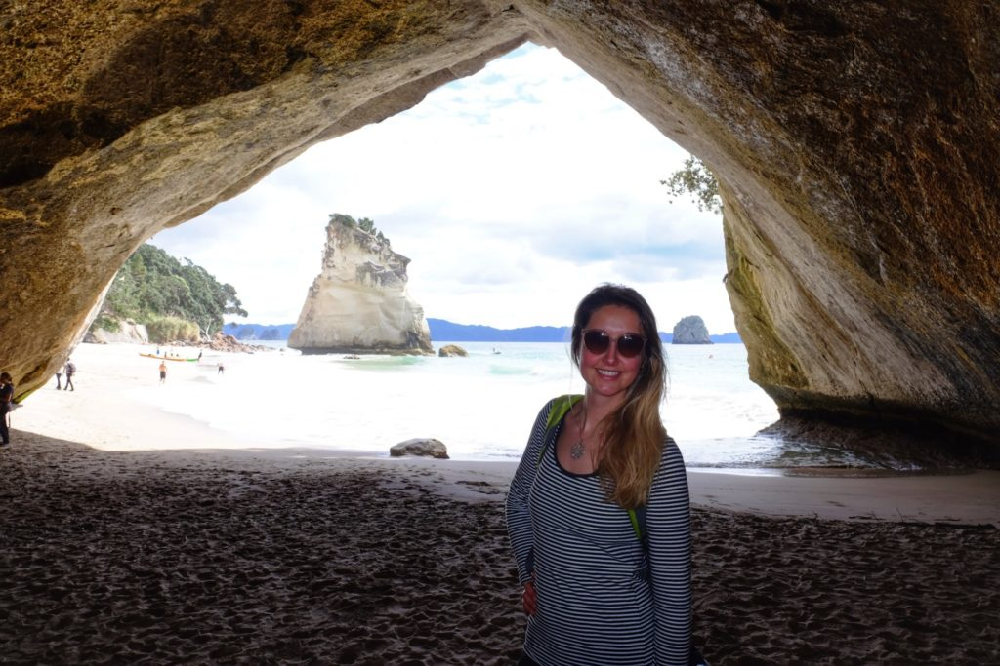to je to fotogenické místo. Mara se snažil tu fotku trochu zesvětlit, ale bohužel to vedlo i k tomu, že jde vidět můj nepřirozeně rudý ksicht 😀
Dalsi zastavkou byl nedaleky vodopad. Takovy mensi splavek. Nepohorsil, ale nijak nehromil 😀 O kousek vedle jsme na hipiky objali par Kauri stromu a vyrazili dal.
Za to dalsi misto bylo uzasny a stalo za tu drinu. Byl to cca 40 minutovy vyslap do kopce. Brodili jsme se blatickem a cim vys jsme byli, tim strmejsi cesta. Poslednich deset minut uz clovek musi po ctyrech, protoze jinak by se tam nevydrapal. Najednou se z lesa ocitnete nahore na skale a mate vyhled do vsech svetovych stran. Je to nadhera. Sice jsem podle me mela nahore mensi hypoglykemicky zachvat ,ale 4 mentolovy bonbony to spravily 😀
ten výběžek vpravo nahoře a to auto vlevo dolesuper výhled 🙂
Po ceste na ubytovani jsme zastavili na Stuartove farme. Pan Stuart je postarsi chlapek, jehoz rodina vlastni praseci farmu uz nekdy od roku 1940. Maji tam nekolik hektaru pudy a prasata si tam volne behaj uplne vsude vcetne silnice. Pan Stuart chodil bosky a podle stavu jeho noh jsme odhadovali, ze chodi bosky jiz od roku 1970. Nadsene mi podal do naruce nejmladsi sele na farme, ktery nejen, ze z toho nebylo nadseny a rvalo tak, ze se divim, ze me jeho mama nesnedla, ale taky jsem diky nemu smrdela jako prase 😀
nejmladší přírůstek na farmě
Ubytovani jsme meli pres Airbnb u pohledneho mladika z Jihoafricke republiky, ktery byl IT/dobrovolny hasic a mel milouckou obtloustlou labradorku (sexy, co? 😀 ) Udelal nam na snidani domaci musli (jeste o neco vic sexy 😀 ) a povidal nam o utrapach pri koupi a staveni domu na Zelandu. Kazdopadne ten jeho barak byl z papiru a jedna noc mi tam docela stacila, protoze na jedne strane baraku slysite splachnuti zachodu, ktery je dva pokoje od vas.
Dalsi den uz jsme tak bajecny pocasi nemeli, ale s tim jsme pocitali. Nazuli jsme pohorky, oblikli bundy a zajeli si na farmu. Mara se rozhodl, ze az jednou budeme mit farmu my, musime mit australskou vacici, protoze je to bezvadny zvire 😀 Taky me dost fascinoval pstros, ktery byl jeste o dost vetsi nez ja. To se jen tak nevidi 😀
Vačice Peppakozí domek
alpaka Brunoklokánci
z profilu tam vidím určitou podobnost 😀Punk’s not dead
na té fotce to moc nevypadá, ale byl fakt pořádnej
ovce trochu jak z hororu
Nakonec jsme se stavili v takove malebne syrarne, kde sme si objednali kafe a syrovy talir. Syr nic velkyho, ale meli tam vybeh s kozama a lamama, takze nakonec jsem byla relativne spokojena. Domu jsme prijeli naprosto vyrizeni a shodli se na tom, ze dalsi vikend budeme jen lezet na gauci a odpocivat 🙂
Poslední dva týdny na Zélandu jsme zařizovali před-odletové záležitosti, prodávali poslední věci, ukončovali smlouvy apod. Bylo to trochu smutné, ale já se popravdě domů těším. Těším se na tu moji famílii, kamarády, na piškoty a kvasnicovou pomazánku 😀
Rozlučkové foto s Marovým týmem v práciRozlučkové foto s mým domácím týmem 😀Největší žížala na světě
Co se týče prodeje věcí, podařilo se nám prodat téměř vše kromě pár maličkostí, které jsme spolu se spoustou oblečení odnesli do Armády spásy.
Předposlední víkend jsme si udělali výlet do Muriwai podívat se na zdejší ptačí kolonii. Anglický název je Gannet. Po dlouhém googlení mi to našlo překlad Terej bílý 😀 Nikdy jsem o něm neslyšela, ale je to jedno z doporučovaných míst kam se vydat na výlet blízko Aucklandu. Bylo teplo a svítilo sluníčko, tak jsme se oblékli tak trochu nalehko, což byla největší chyba dne. Jeli jsme totiž na skútru a jen co jsme vyjeli pár kilometru na Sever, začalo strašně foukat…ale jako strašně 😀 Byla taková kosa, že i Mara přiznal, ze mu je zima 😀 Na ptácích jsme se proto nezdrželi moc dlouho a zmrzlí na kost jsme se vydali zpět. Po cestě jsme se stavili na ochutnávku piva v jedné sympatické pivnici. Dali jsme si set obsahující 4 vzorky piva a sýrový talíř. Pivo nám sice donesli, ale sýr nikde, takže jsem se váhavě otázala číšníka, jestli jsem to pochopila špatně a jestli se k tomu vůbec sýr dává. Číšník mi oznámil, že jsem to pochopila špatně, ale ze to nevadí, ze nám dá ten pivní set zdarma a donese nám tu variantu se sýrem. Ochutnali jsme osm různých druhu piv a ušetřili 25 dolarů. Něco blbě pochopit má občas i svoje výhody.
Ten vlevo byl top
Moje velká novinka je, že jsem po patnácti letech začala nosit vlasy s pěšinkou na prdel. Dost mi to ladí k mému hippie štylu a již vážně hodně odrostlé blond barvě. Trochu to přirovnávám k jednomu Bišonkovi, který byl u nás na klinice na ošetření zubů. Měl na hlavě ostříhaný a perfektně načesaný afro. První dojem byl samozřejmě u celého osazenstva kliniky stejný. „Pane bože koukni na toho psa, chudák, vždyť vypadá jako úplnej debil“ 😀 Ale čím déle tam s námi byl, tím víc se nám jeho afro sestřih líbil. Nakonec jsme se shodli, že je to vlastně báječnej střih 😀 Dole na fotkách můžete porovnat mě a psa 😀
Na prdelafro střihprofil
Před pár dny jsme se přesunuli na Srí Lanku. Balení a let byly velmi náročný, takže si teď užíváme zasloužený odpočinek. První dva dny jsme strávili ve měste Negombo, což je hned vedle hlavního města Colombo a velmi blízko letiště, kam jsme přiletěli ve tři ráno. Pokud můžu doporučit, do Negomba určitě nejezděte 😀 Je to nepěkné a špinavé městečko, kde na vás nic zajímavého nečeká.
Poslední společné foto na Zélandu
Nejnepříjemnější situace nastala v noci, kdy se v našem relativně čistém ubytku objevili švábi. Byla to naprostá švábí invaze, kde každý z nich byl velký jak moje hlava 😀 (chápej 4 švábi velikosti malíčku) Mara je musel pochytat do sklenky a spláchnout do záchodu. Já se pak bála čůrat, protože mi bylo jasný, že se budou chtít vyškrábat zpátky a pomstít se 😀 Ráno mi Mara prozradil, co se mu v noci stalo. Jeden z těchto obřích švábů se očividně neudržel na stropě a spadl mu na hlavu 😀 Stát se tohle mně, tak chodím do konce života na terapii. No do rána už jsme toho moc nenaspali.
Z prozatímních postřehů stojí za zmínku asi všudypřítomné vrány, které tu žijí v harmonii s obyvatelstvem i zdejšími potulnými psi a místní vlak, který připomíná naše staré motoráky, ale místní jezdí s otevřenými dveřmi a při naší jízdě byl vlak tak plný, že jsem se nemusela držet, protože mě drželo těch 346788554 tisíc lidí okolo mne.
Celá Srí Lanka na mě působí dojmem, že by to byl vážně nádherný ostrov, kdyby tady nežili žádní lidé 😀 Protože místní obyvatelé to tu pustoší ve velkém a odpadky všude okolo, na ulici, pláži, v kanálech a řekách jsou tu prostě normální. Teď jsme na jihu ve městě Galle. Je to turistická oblast, takže je to tu pěkné a udržované. Včera jsme leželi celý den na pláži a užívali si sluníčko a místní jídlo. Dali jsme si talíř mořských plodů a byla to opravdu bašta. Dokonce i můj žaludek se s místním jídlem docela přátelí, což beru jako veliké plus. Mara se včera i přes mé věčné upozorňování nenamazal opalovacím krémem, protože byl přece ve stínu, tak proč by to dělal. Dole můžete vidět, jak se z odstínu IT bílá stala signální červená. Tak třeba ho to konečně trochu vyškolí a začne se mazat.
rudej jak paviání zadekKuřata na trhuSuper pití z ovocné šťávy a kondenzovaného mléka
Náš nový pes Karel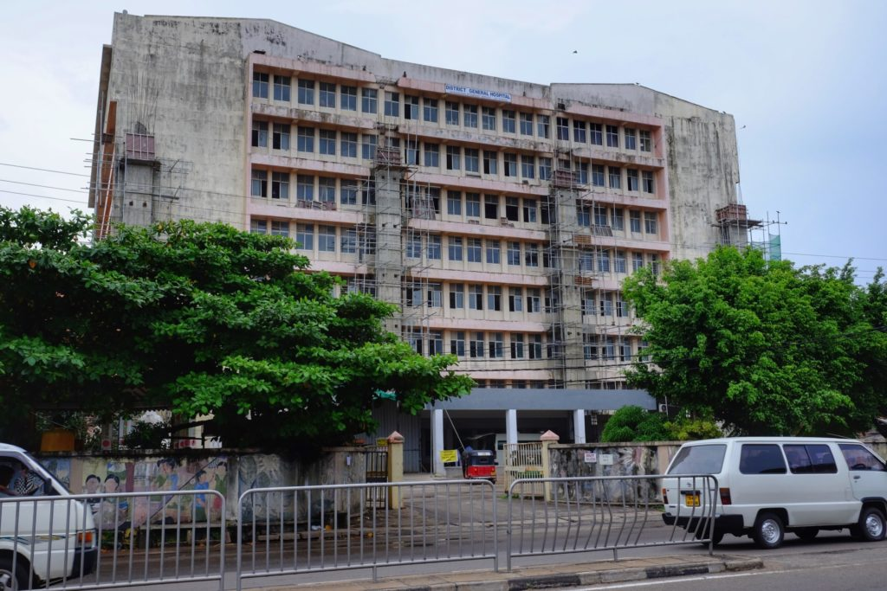zdejší nemocnice 😀 Po tomto objevu jsme se rozhodli, že se nám tu nic nestane 🙂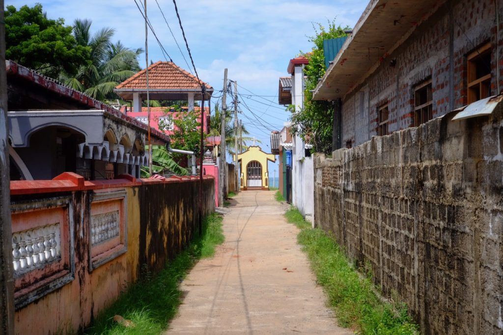Jedna z uliček vedoucích k moři s malou kapličkou. Překvapilo nás, že nejrozšířenější místní náboženství je křesťanství.
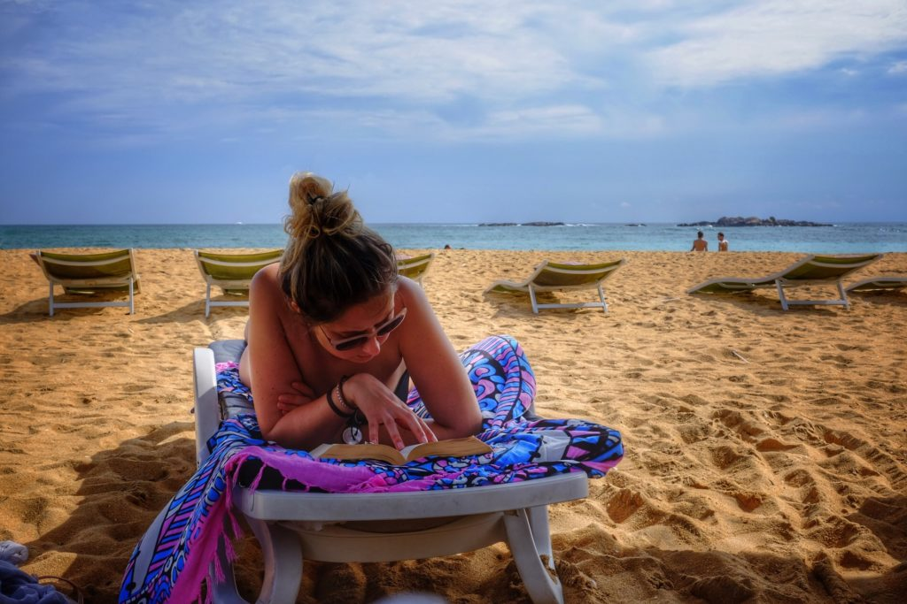Čtu knihu Zlatokopky. Je to velmi zajímavá a naučná literatura 😀
Na Srí Lance opravdu nemůžete věřit předpovědi počasí, a to ani na aktuální den. Předpověď ukazuje na téměř každý den déšť a bouřky, což se opravdu neděje. Celý den je tu pěkně, až k večeru většinou začne pršet a občas přijde nějaká bouřka.
Strávili jsme pět dní v městě Unawatuna a užívali si pláž, sluníčko a spoustu jídla. Já jsem si u místních holek nechala ušít dlouhou sukni. Byla to náhrada za mou bílou sukýnku ke kolenům, která už byla celá roztrhaná a vypadala fakt hrozně, tak mi Marek taktně naznačil (již před dávnou dobou), že bych ji měla vyhodit. S novou náhradou ten vyhazov bolel o něco méně 😀
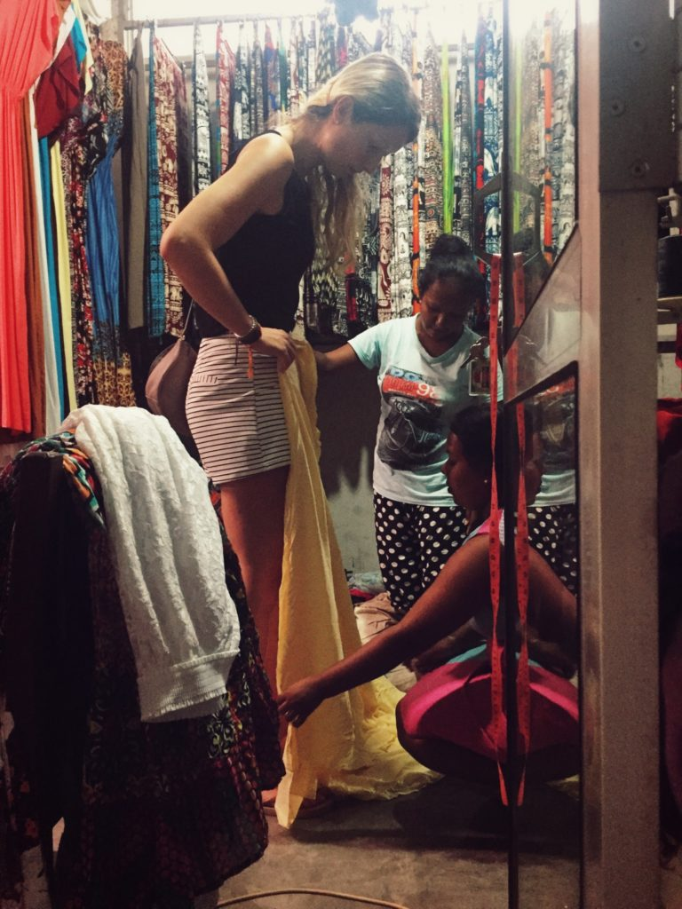holky si mě měří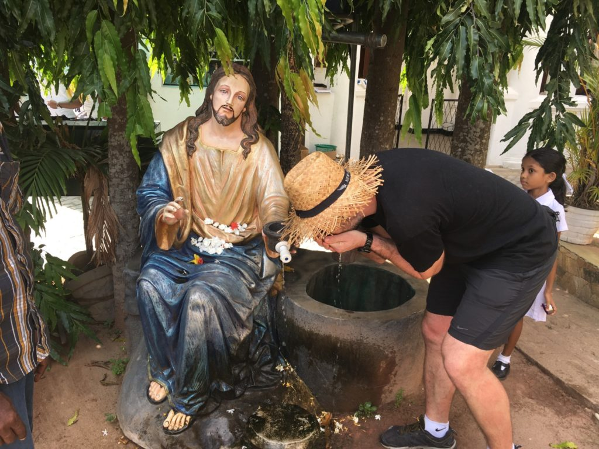Mara pije vodu od Ježíše. Já Ježíšovi až tolik neveřila.
Jeden den jsme si půjčili motorky a vyrazili se podívat po okolí. Byl úplněk a to u místních znamená svátek. Spousta míst byla zavřených, rybáře na kůlech jsme bohužel neviděli, ale zajeli jsme si na čajové plantáže a do záchranné stanice pro želvy, kde nám popovídali o životě mořských želv a mohli jsme si je tam všechny pomuchlovat. Některé z nich měly jen menší zranění, většinou šlo o ránu v ústech od háčku na ryby, a za pár týdnů je vrátí zpět do moře. Některým chyběly končetiny nebo sem tam oko, a ty už bohužel zpět pustit nemohou. Venku měli velkou líheň, kde byly zahrabány stovky, možná i tisíce želvích vajíček. Nosí jim je místní, kteří je najdou na pláži. Na pláži mají mnohem nižší šanci na přežití a někdy ze sta vajíček nepřežije jediné mládě. Ve stanici se vylíhne 70% ze všech vajec. Stanice za to místním lidem platí, stejně jako rybářům, kteří sem nosí zraněné želvy. Z dobré vůle a lásky ke zvířatům je tam bohužel nikdo moc nenosí.
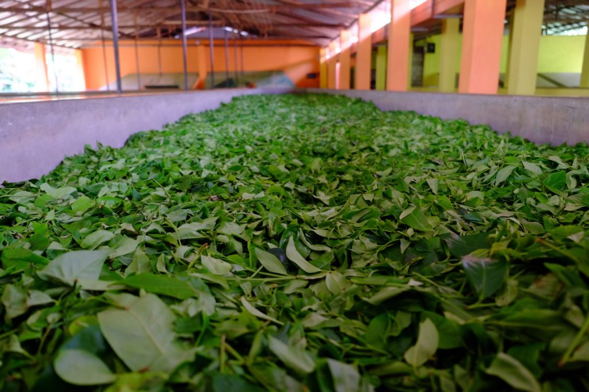sušení čajových listů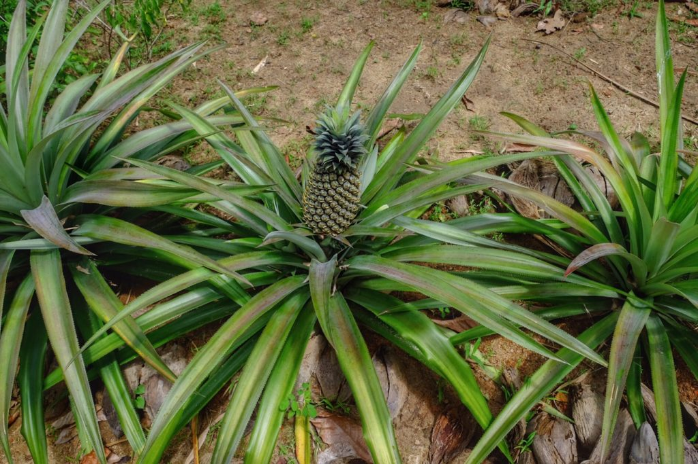ananas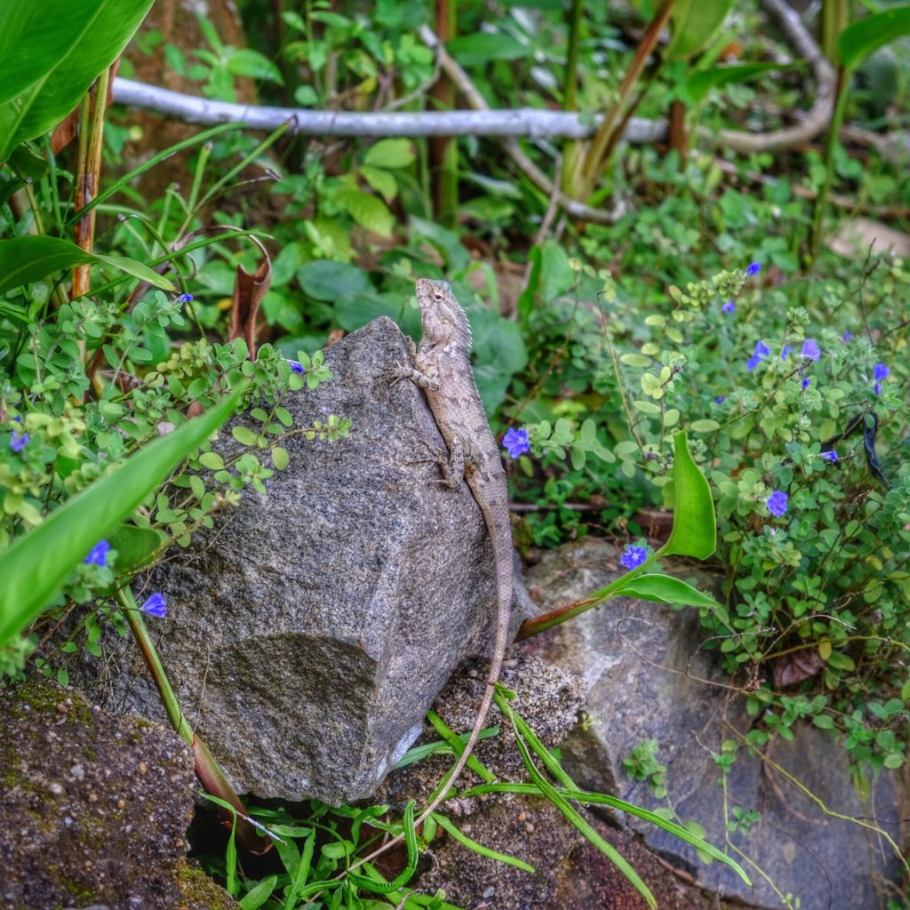modelka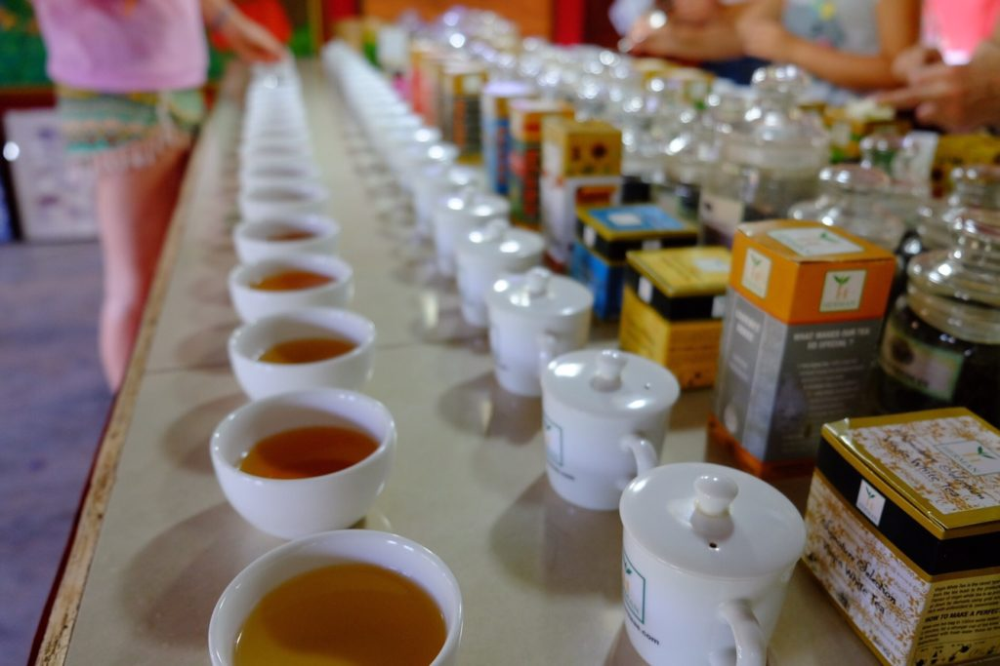ochutnávka čajů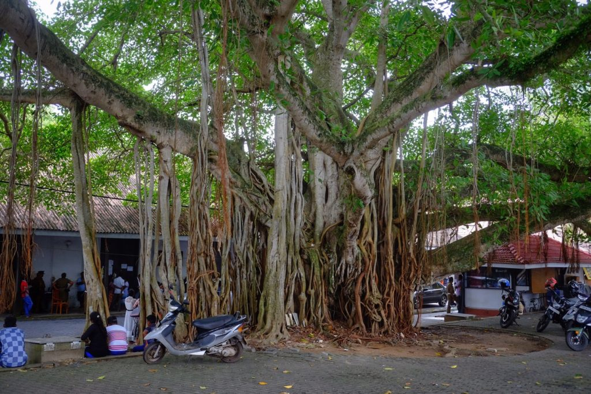Tohle je strom na náměstí ve měste Galle. Ta budova vlevo je soud. Lidé se přišli podívat na proces dvou mužů, kteří prodávali heroin. Zajímalo by mě jak to dopadlo, protože za drogy je tu trest smrti.místní trh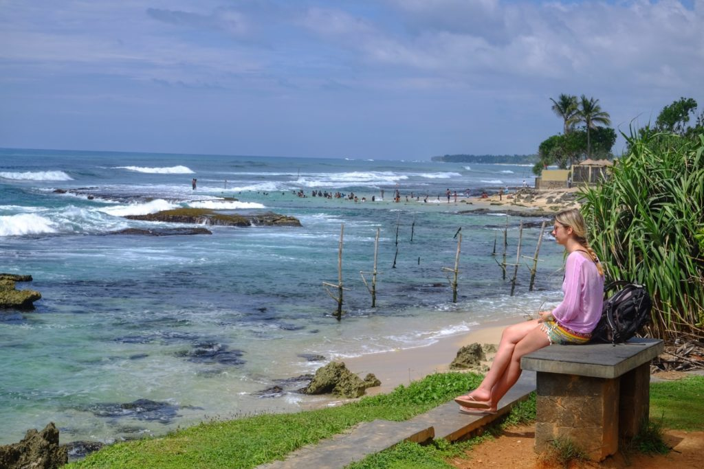kůly na kterých sedávají rybáři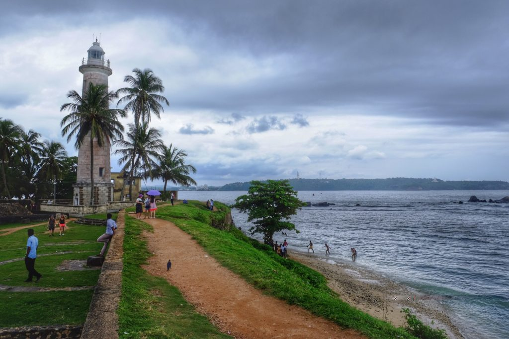maják ve městě Galle
To já se takhle z dobré vůle a lásky ke zvířatům rozhodla zachránit žábu z bazénu. Naznala jsem, že okraje bazénu jsou příliš vysoké a ona se chudinka vysílená nemůže dostat ven. Přišlo mi trochu bleble na ní šáhnout, ale tak přece jí tam nenechám umřít, že. Odnesla jsem ji tak dvacet metrů do trávy a cítila se jak Matka Tereza. Další den se opakovalo to samé, ale já byla zrovna na snídani a celá oblečená. Nakláněla jsem se skoro v leže do vody, byla úplně mokrá a lovila žábu. Zalarmovala jsem místní personál, který na mě koukal, že jsem se asi bouchla do hlavy. Po úspěšném výlovu jsem ji vytáhla na břeh, kde na mě žába chvíli rozpačitě koukala a pak si skočila zpět do vody. Tak jsem ji znovu vylovila a říkám jí: „Nebuď blbá, umřeš“. Žába na mě skoro prosebně koukala, ať už jí dám pokoj a skočila zpět do vody. V té chvíli moje dvě mozkové buňky začaly spolupracovat a mě konečně došlo, že asi nemá problém s tím se dostat ven z bazénu a rozhodně tam neumře. Mara se mi smál, že tam šikanuju žáby a já se ostudně vrátila zpátky ke své snídani.
Jinak jsem se dosti váleli na pláži a u bazénu, četli a spali 😀 Zkusili jsme si nechat okousat nožky rybkama, což neskutečně lechtá, takže jsem se prvních pět minut jen smála. Mara usoudil, že je to dost nuda a hrál si hru na telefonu. Taky jsem zkusila místní jógu, která byla naprosto báječná a moc mě bavila. Měla jsem první lekci sama pro sebe, protože se nikdo jiný neukázal. Takovej prťavej jogín mě donutil postavit se na hlavu, což jsem myslela, že rozhodně nikdy nezvládnu a nakonec to nebylo ani tak hrozný 😀 S takovou budu za chvíli taky jogín 😀
bolely mě záda, tak jsem potřebovala namasírovat 🙂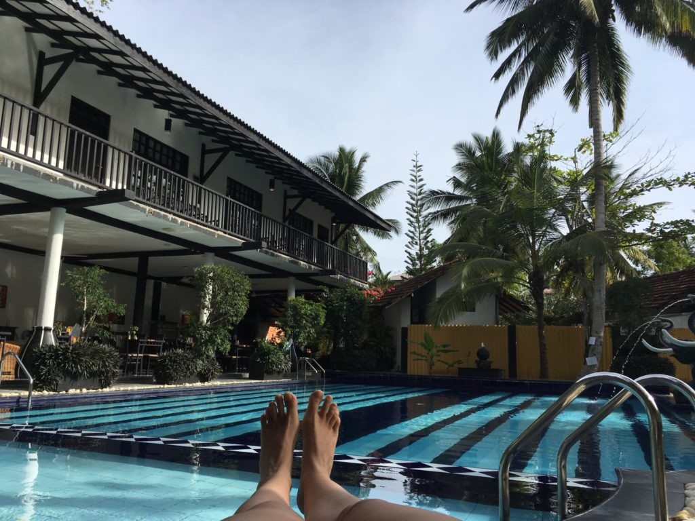pohodinda u bazénu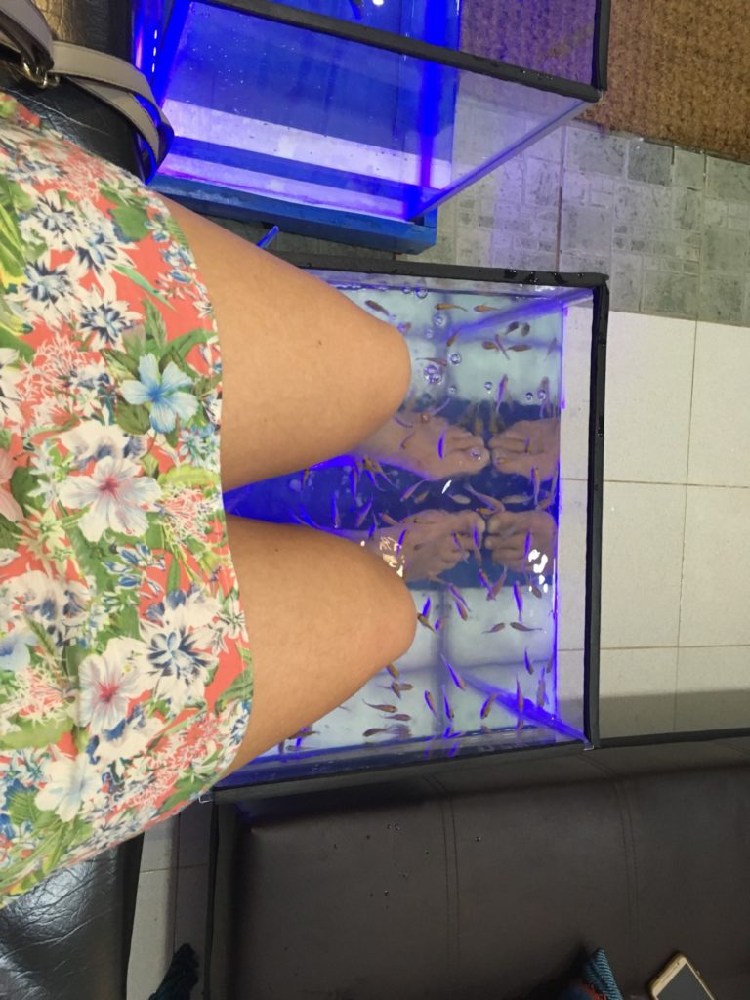rybky
Zajímavý zážitek byl nájezd bagru na pláž a srovnání několika venkovních barů se zemí. Bylo nám řečeno, že prezidentův brácha si nedaleko postavil obří hotel, tak potřebuje klientelu 😀 Oficiální sdělení bylo, že turisti chtějí velkou pěknou pláž, takže to dělají pro nás. Bary dostaly hodinové varování a pak dojel bagr a šmitec.
Ve středu jsme přejeli do města Tissamaharama, odkud je to už nedaleko do národního parku Yala. Ve čtvrtek ráno nás vyzvedl džíp a vyrazili jsme na safari. Byli jsme ve skupince s mámou (cca 65 let) a dcerou (cca 45 let) z Nového Zélandu, tak to bylo sympatické 🙂 Viděli jsme sloní rodinku, jeleny, čuňata, buvoly, orly, krokodýly, pávy a spoustu dalších zvířat, ale hlavně jsme viděli dva levharty! Měli jsme štěstí, protože ne vždy se ukážou. My jsme ale měli šikovného průvodce, který dostal echo přes telefon, takže jsme to drandili po safari rychlostí milión kilometrů v hodině, abychom stihli levharta. Po správném manévrování mezi ostatními džípy a spolupráce našeho průvodce a řidiče, kteří na sebe zběsile halekali, jsme ho viděli, jak přechází cestu. Vypadal už na auta zvyklý a byli jsme mu dost jedno. Dalšího jsme viděli, když jsme mi hledali místo na čůrání. Jeli jsme pomalu a holky novozélandský říkaj: A co tady? Tady za keřem by to šlo, ne? A chvilku na to se tam objevil náš druhý levhart 😀 Mara ho viděl jako první, protože se nekochal pohledem na slona, jak všichni ostatní v autě. Řekla jsem, že to asi ještě chvíli vydržím a šla jsem čůrat až vedle krokodýlů, tam je to totiž bezpečnější 😀 Taky jsme se v jednu chvíli zasekli v bahně a nemohli vyjet, takže jsme museli všichni vyskákat z auta a počkat, až se odtam vyhrabe. Tolik k bezpečnostním pokynům ala nikdy neopouštějte vozidlo 😀
vstup do parku se svítáním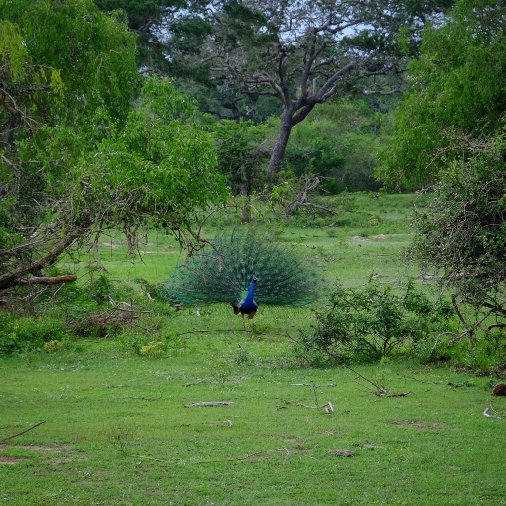ladil páví holky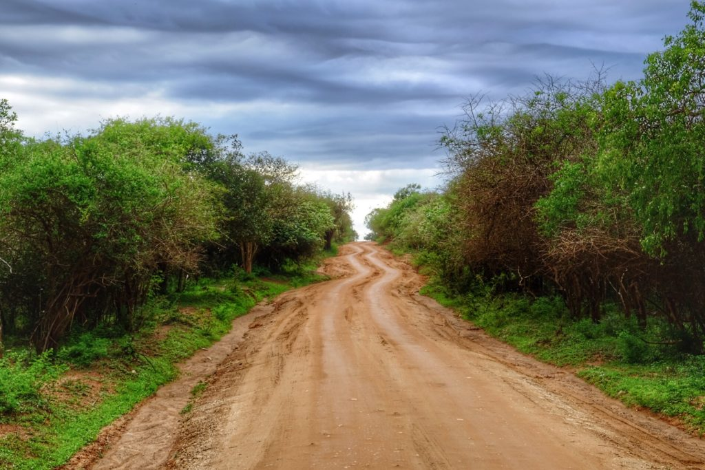naše cesta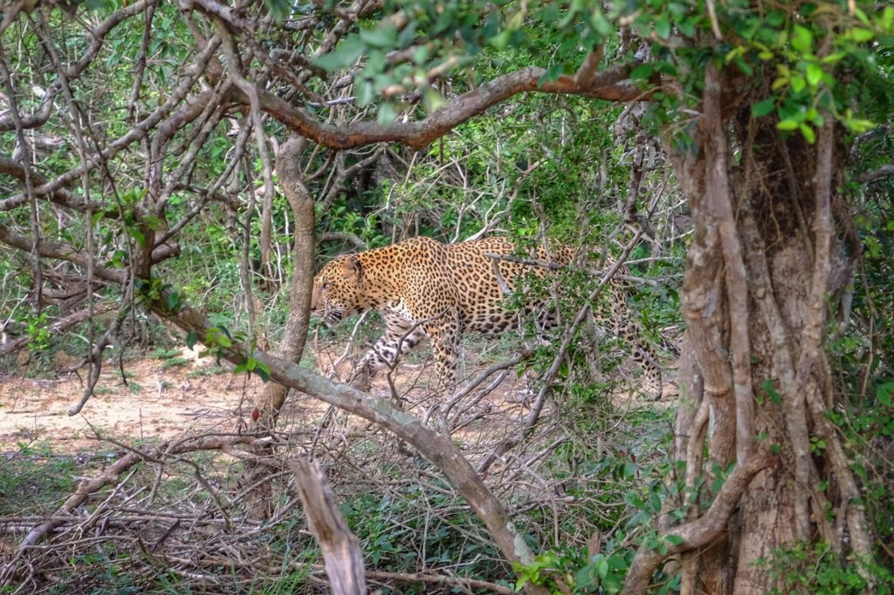levhart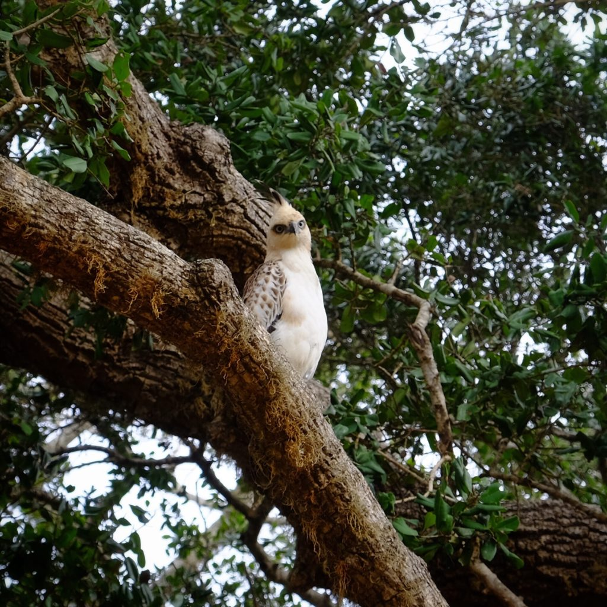myslím, že tvrdil, že je to sokol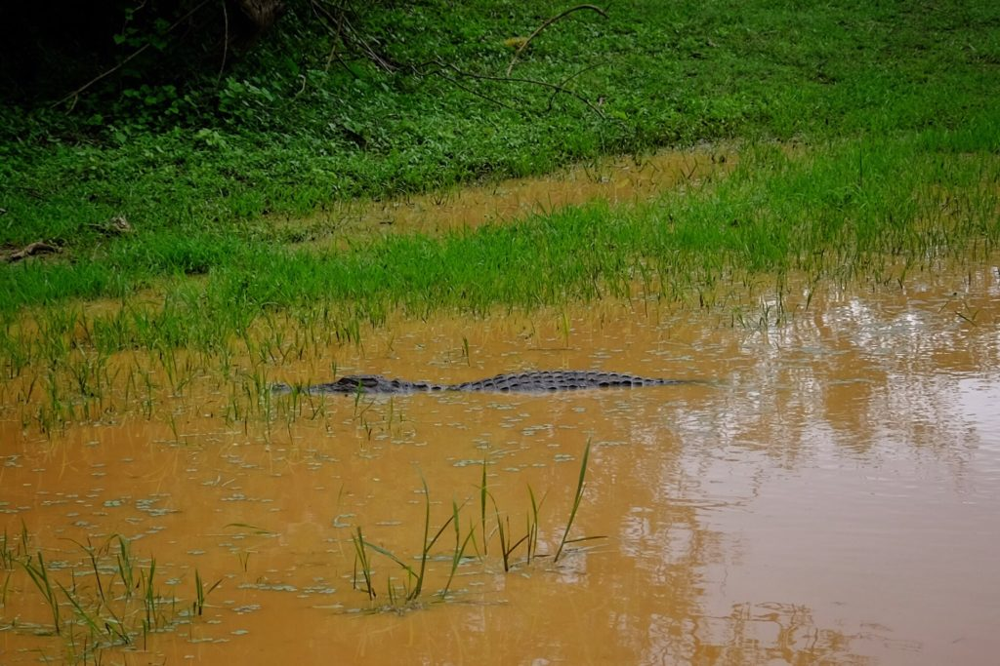sladkovodní krokodýl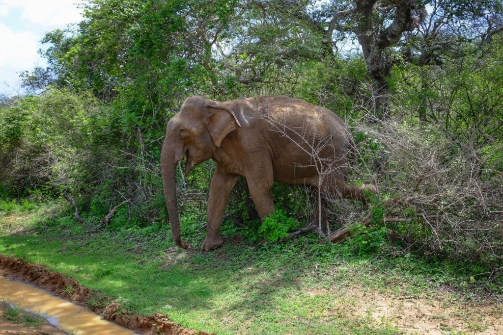vysmátej sloník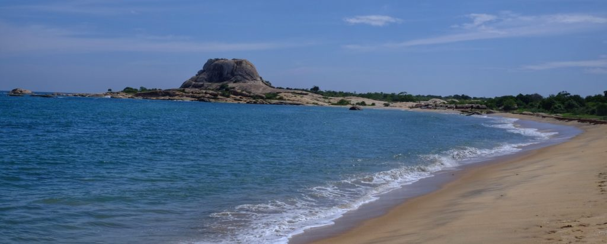Tady byla pauza na oběd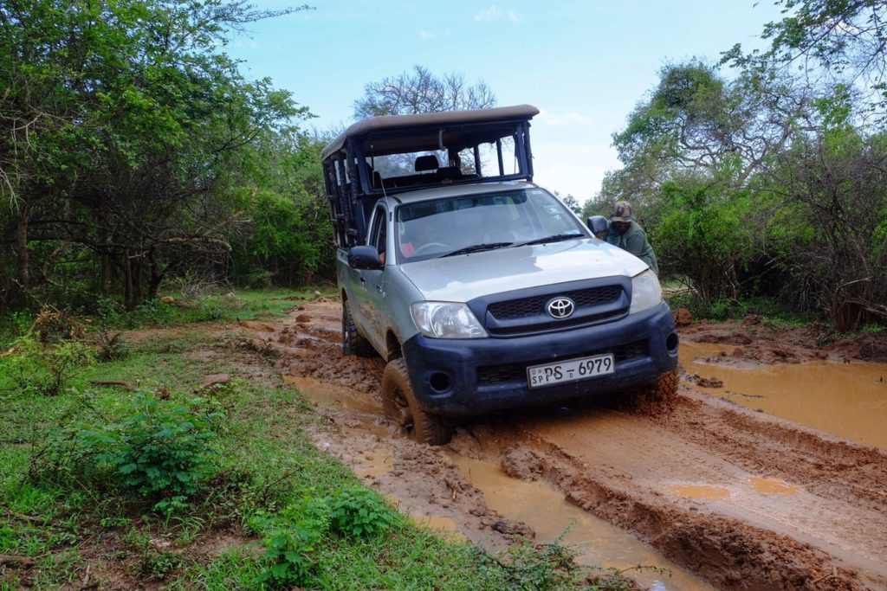zahrabaní v bahně
Na našem ubytovaní půjčovali zdarma kola i skůtr. Této nabídky jsme nadšeně využili a objezdili okolí. Vidět hromadu zajímavých zvířat jde i mimo safari.
netopýřitisíce netopýrů
symbióza
máma a prcekjezero
malý varanvelký varanštěniskopo cestě po okolí jsme potkali fajn místo s bazénem, tak jsme tam chvilku pobyli
Pokud byste se sem někdy chystali, dám vám jednu radu. Nevěřte tomu, co vám místní říkaj 😀 Nemáme s tím zrovna dobrou zkušenost. První informace – křesťanství je převládající náboženství na Srí Lance. Realita – 70% buddhisté. Druhá informace – počet obyvatel 3 miliony. Realita – více než dvacet milionů. Třetí informace – netopýři budou odlétat mezi 6:10 až 6:30 večer. Realita – odlet v 5:55. Už jim nevěřím nos mezi očima 😀 Jo a taky si nepůjčujte na motorku helmu s plastovým kšiltem, protože vám to bude táhnout hlavu dozadu a bude vás to pěkně vytáčet 🙂
No a samozřejmě nesmím zapomenou na jídlo.
vypadá to jak uvařený vetřelec, ale je to humr, obří kreveta, ryba, malé krevetky a kalamáry. Velká bašta.zubatá rybkaBuvolí jogurt, který se prodává v těchto hliněných mísach a chytne od nich takovou chrakteristickou kouřovou chuť. Podává se jako dezert s medem nebo kokosovým sirupem.


{kind=link}
{kind=link}
{kind=link}
{kind=link}
{kind=link}
{kind=link}
{kind=link}
{kind=link}
{kind=link}
{kind=link}
{kind=link}
{kind=link}
{kind=link}
{kind=link}
{kind=link}
{kind=link}
{kind=link}
{kind=link}
{kind=link}
{kind=link}
{kind=link}
{kind=link}
{kind=link}
{kind=link}
{kind=link}
{kind=link}
{kind=link}
{kind=link}
{kind=link}
{kind=link}
{kind=link}
{kind=link}
{kind=link}
{kind=link}
{kind=link}
{kind=link}
{kind=link}
{kind=link}
{kind=link}
{kind=link}
{kind=link}
{kind=link}
{kind=link}
{kind=link}
{kind=link}
{kind=link}
{kind=link}
{kind=link}
{kind=link}
{kind=link}
{kind=link}
{kind=link}
{kind=link}
{kind=link}
{kind=link}
{kind=link}
{kind=link}
{kind=link}
{kind=link}
{kind=link}
{kind=link}
{kind=link}
{kind=link}
{kind=link}
{kind=link}
{kind=link}
{kind=link}
{kind=link}